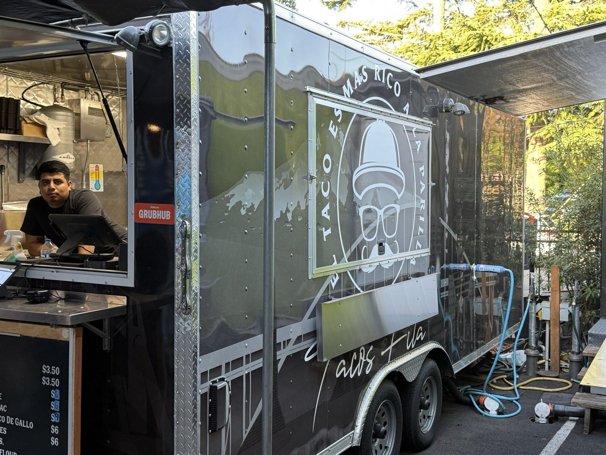
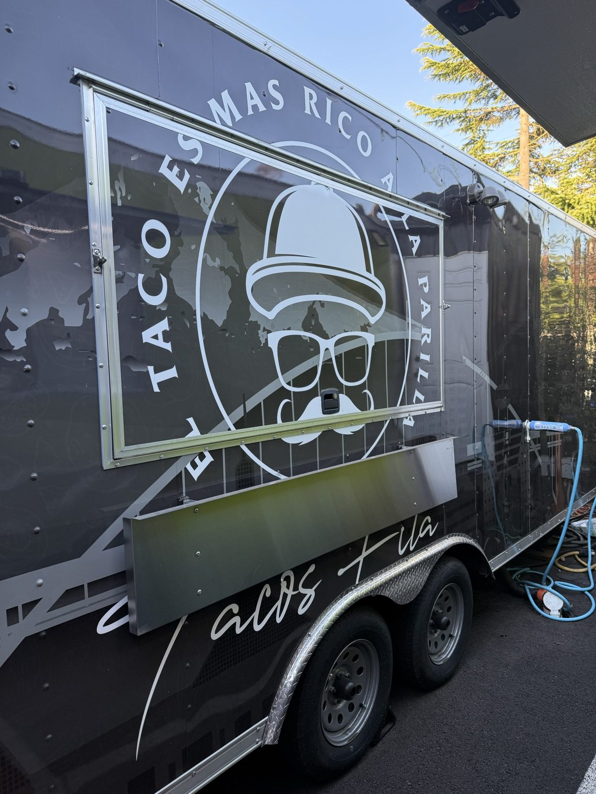
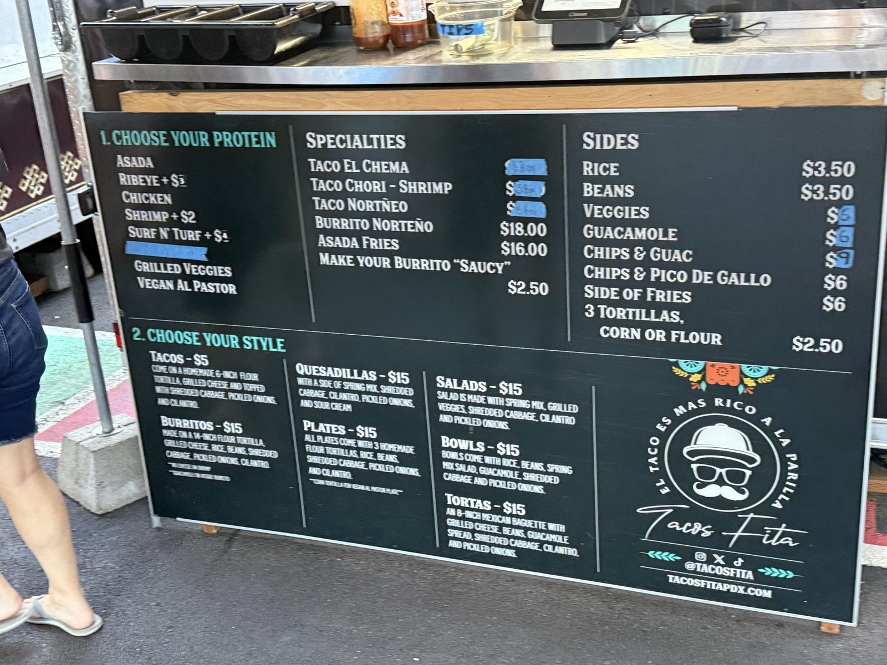
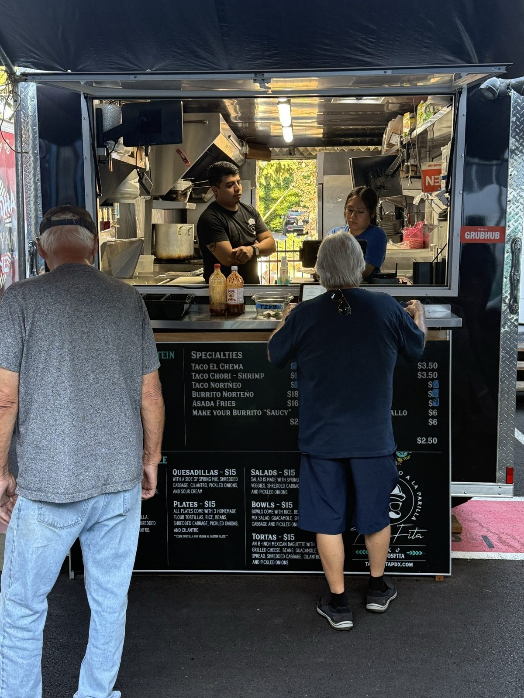

Worth Driving Across Town For, at Tacos Fita

Two doors down from a pizza place that was just okay is a food truck called Tacos Fita, parked in a little cart pod on SE Woodstock Blvd in Portland, Oregon — and this is the best carne asada taco I've had in this entire region. I'll drive out of my way across town once a month just to come back for it.

What makes the Tacos Fita carne asada taco so good?
The taco comes on a homemade flour tortilla with grilled cheese, then gets topped with shredded cabbage, pickled onions and cilantro. It's the pickled red onions on top that make it — the sharp, vinegary bite cutting through the richness of the grilled asada and melted cheese is what pushes this from a good taco into the best one around. If you want real heat on top of that, they keep a habanero sauce on the counter that means business — I watched it get a little scream out of a couple of women standing near me the first time they tried it.

Is Tacos Fita worth the drive?
Yes, and easily. Five out of five. This isn't a neighborhood taco truck I'd only stop at if I happened to be nearby — it's the kind of place worth planning a trip around, and I expect to be back roughly once a month for it.

El taco es más rico a la parrilla.
The practical bit
Tacos Fita — in the food cart pod at 4727 SE Woodstock Blvd, Portland, Oregon 97206. 📍 Get directions
Hours: generally midday through evening, Tuesday through Sunday — closed Mondays.
Worth knowing: get the carne asada taco, don't skip the pickled onions on top, and ask for the habanero sauce only if you actually mean it.
Right across the lot from Pizza Roma, if you want a slice and a pinball game while you wait.